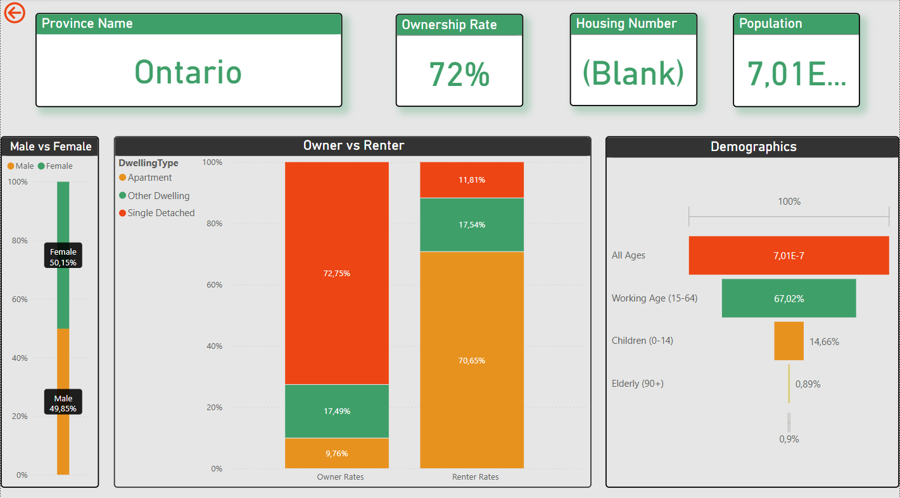
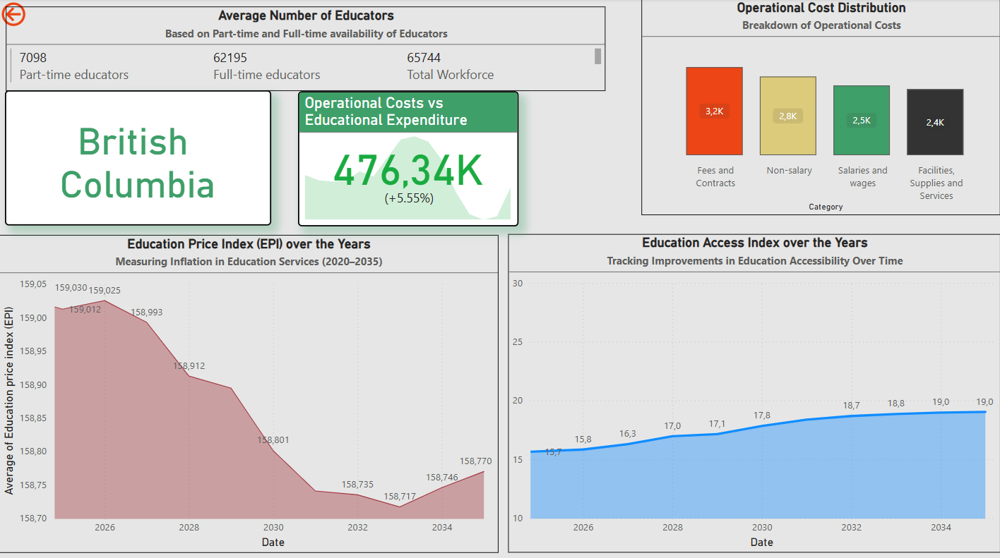

Introduction
This page presents a series of dashboards developed to forecast key metrics related to Canadian population, housing, and education, with a focus on the impact of immigration levels. These tools aim to provide insights for planning and policy-making.
Data sources include Statistics Canada and internal projections. Methodologies involve time-series analysis and demographic modeling.
Dashboard 1: National Population & Housing Forecast

An interactive tool projecting Canada's national population and household numbers. Users can adjust immigration inputs to see potential impacts on future trends and housing density indicators.
Dashboard 2: Provincial Housing & Demographics
Displays key housing and demographic statistics for a selected province (e.g., Ontario), including population breakdown by age/gender, homeownership rates, and dwelling types.
Dashboard 3: Provincial Education Metrics
Monitors key indicators for the education sector within a selected province. Tracks metrics such as the educator workforce size, operational costs, the Education Price Index (EPI), and accessibility trends over time.
Conclusion
These forecasting dashboards provide valuable insights into the interconnectedness of immigration, population growth, housing demand, and educational resources in Canada. By exploring different scenarios, users can better understand potential future challenges and opportunities.
Further analysis could involve refining models with additional variables or extending forecasts to municipal levels.